ROOTED
IN
RYUKYU
BUILT
FOR
TOMORROW
IN
RYUKYU
BUILT
FOR
TOMORROW
OKINAWA
JAPAN
26.2124° N
JAPAN
26.2124° N

GUARD THE CULTURE.
00 / MANIFESTO
RYUKYU
IS NOT
A THEME.
琉球に根ざした造形、色、記憶。
それをそのまま保存するのではなく、
いま着るものへ変換する。
RECODED.
01 / DROP 001WARDEN RYUKYU
SHISA
RUNNING.
獅01 / RED
獅02 / IVORY
獅03 / BLUE
THREE GUARDIANS.ONE FLOW.
THE MARK OF RYUKYU.
THE UNIFORM OF NOW.
02 / NEON SHISAAFTER
AFTER
DARK.
SHISA / RECONSTRUCTED IN LIGHT
獅
OKINAWA / JAPANFROM